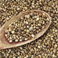
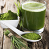
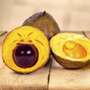
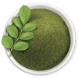
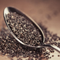
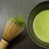
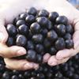
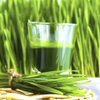
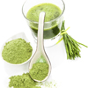

Flores de Bach
Cura por la energia de las flores
···
Las flores contienen y manifiestan la máxima energía del reino vegetal. Del suelo retiran todas las vibraciones de los minerales que suben por la savia vital de la planta.A través de la energía de la luz, las vibraciones de todo el Cosmo las trasforman en colores en formas harmoniosas, en aromas y catalizan la energía de la reproducción. Todo dentro de un equilibrio.
Las Flores contienen el principio etéreo de la energía de las flores, es decir, su energía vital. Tienen una alta vibración que tienen el poder de aumentar nuestra vibración humana.
El beneficio de la toma de las esencias florales se obtiene cuando nos involucramos en nuestro propio proceso de aprendizaje vital, como facilitadoras del crecimiento personal ayudándonos a ser más conscientes de nuestros conflictos internos y de nuestra auténtica personalidad, lo que nos permite gestionar nuestra vida de una manera más satisfactoria.
Te ofrecemos consultas y formulaciones individuales.

Cañamo

Coco

Espirulina

Lúcuma

Moringa

Maca

Chía

Matcha

Açai

Goji

Verde de trigo

Verde de cebada